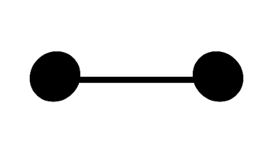

Transitions properties
Now that we have seen the transition property in action, let’s look at the properties that go into transitions and what they mean.
Shorthand vs Longhand
When writing CSS, we can often summarise multiple properties into one in a shorthand property. For example, padding written as shorthand might look like this:
padding: 10px 20px 15px 25px;
This would be the equivalent of:
padding-top: 10px;
padding-right: 20px;
padding-bottom: 15px;
padding-left: 25px;
In the same way, we can write a transition as shorthand too:
transition: all 0.5s 1s linear;
In this case, the shorthand corresponds to:
transition: [property] [duration] [delay] [timing-function];
Each of these properties can be written individually:
transition-property: all;
transition-duration: 0.5s;
transition-delay: 1s;
transition-timing-function: linear;
Let’s look at each of these properties.
transition-property
Usually stated first in the shorthand, this is the property that the browser will animate. To change the background for example, background could be used. It’s also possible to use all to have all applicable CSS properties transition.
transition-duration
A transition-duration value tells the browser how long the transition will take. A transition-duration of 3s (three seconds) will be three times longer than a transition-duration of 1000ms.
transition-delay
The transition-delay property tells the browser to wait before applying the transition. This is a time value, and it can be specified in seconds or milliseconds. For example, 3s would be three seconds and 100ms would be one hundred milliseconds. Equally, you could write that as 0.1s. It’s up to you.
transition-timing-function
Both transitions and animations make use of timing functions. There’s a lot to these, so rather then try to cram it in here, we’ll talk more about timing functions tomorrow. Timing functions can really add life to your animations.
Things transitions don’t work on
While you can use transitions on positioning, size, colour, border, background-position and many others, there are some that cannot be transitioned. The font-family cannot be transitioned, as this would mean trying to generate frames between two very different font images.
Background images created with CSS, such as generated gradients, cannot have their properties animated. This would mean the browser recreating the background image with each frame of animation, so it’s not supported.
However you can animate things like opacity and background position. By moving background images around or hiding them you can create interesting effects.
See it in action on this Baymax example where a background image is moved to create the animation.
A similar effect is used on this button sheen effect, where the background gradient is animated across the front of a button.
Homework
I’ve created a basic Codepen to try out transitions.
At the moment it’s set up to transition from a diamond shape into a circle. Try changing some of the attributes, to see what happens.
If you’d like to go further, press the “Fork” button to create your own version and you can then save your work to your own Codepen account.